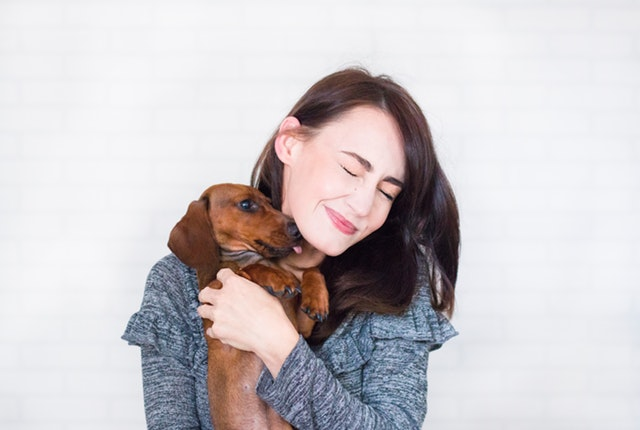
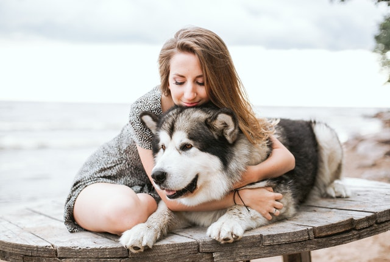

Hundjouren är en ideell förening som bildades 2012 med ett mål – att rädda avlivningshotade hundar och ge dem en andra chans till ett lyckligt och kärleksfullt liv. Sedan vi startade har vi räddat tusentals hundar och hjälpt dem att hitta nya kärleksfulla hem. Vi ger varje hund en chans till ett nytt och bättre liv.
Hundjourens uppgift är att ta emot och vårda hundar som inte längre kan vara hos sina mattar och hussar. Skälen till att hundarna hamnar på Hundjouren är många. Familjehunden som är på rymmen hamnar här efter att polisen har fångat in den. Ägarna till dessa hundar kommer oftast så fort de kan och hämtar ut sin vän. Familjesituationer kan också drastiskt förändras som t.ex. vid dödsfall eller sjukdom. Om hundägaren blir frihetsberövad kommer också hunden oftast till Hundjouren. Vidare kommer ett stort antal vanvårdade hundar in på Hundjouren vars ägare misskött dem. Sen har vi hundarna som dumpas när hundägaren av någon anledning tröttnat på dem. Har de tur och inte blir påkörda eller hungrar ihjäl så hittas de och kommer till oss på Hundjouren. Målet med verksamheten är att se till att utsatta hundar som hamnar på Hundjouren, oavsett anledning skall få det så bra som möjligt utifrån hundens förutsättningar och få ett nytt kärleksfullt hem.
